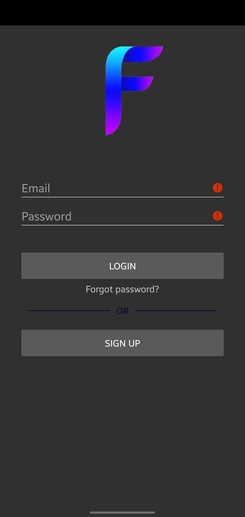
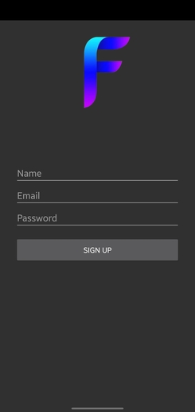
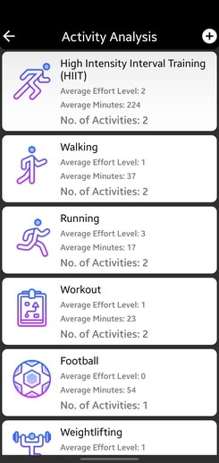
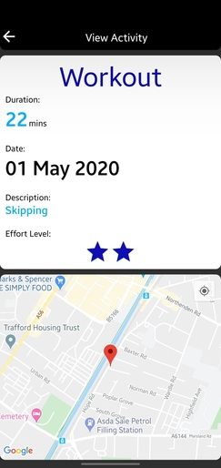

Login Page

This is the Login page. As you can see, you need to enter the your email and password. But you can also register or reset your password with the different links.
Register Page

This is the Register page. You need to enter your email address, name and password in order to be able to login to the application
Homepage

After successfully logging in, you are greeted with this page. If you are a new user and have no activites saved, there will be a prompt to create an activity! As you can see there is a custom Navigation bar at the top which has two buttons; music and profile. The music icon will lead you to a great playlist on Spotify which is recommended to boost your performance! The Profile icon leads you to the profile and settings page where you can customise aspects of this application. There is a graph which shows you your activity in minutes that month.
In the lower half, there are two icons, Activity Analysis and Add Activity. The left icon takes you to a page showing you all of the categories you have done in order frequency. The right button takes you to the add activity page. The cards at the bottom show you all activities for the current month with colours showing the effort level. Red being a low level of effort and green being a high level of effort. If you click on the card, it will show you more information regarding the activity.
Activity Analysis

On this page, you can see at the top the most frequent activity is placed and being sorted by average minutes active.
Add Activity

Here you can add activity details. You can choose a specific type of activity from the dropdown list, enter the minutes, set the effort level and add more description on the activity.
View Activity

More details regarding the activity performed is shown, such as, location on Google Maps and description of the activity.
Profile

You can change your name and see if your email has been verified or not with the tick. In addition, you can change your notifications preferences and change the time you would like to be reminded if you have done no activity.